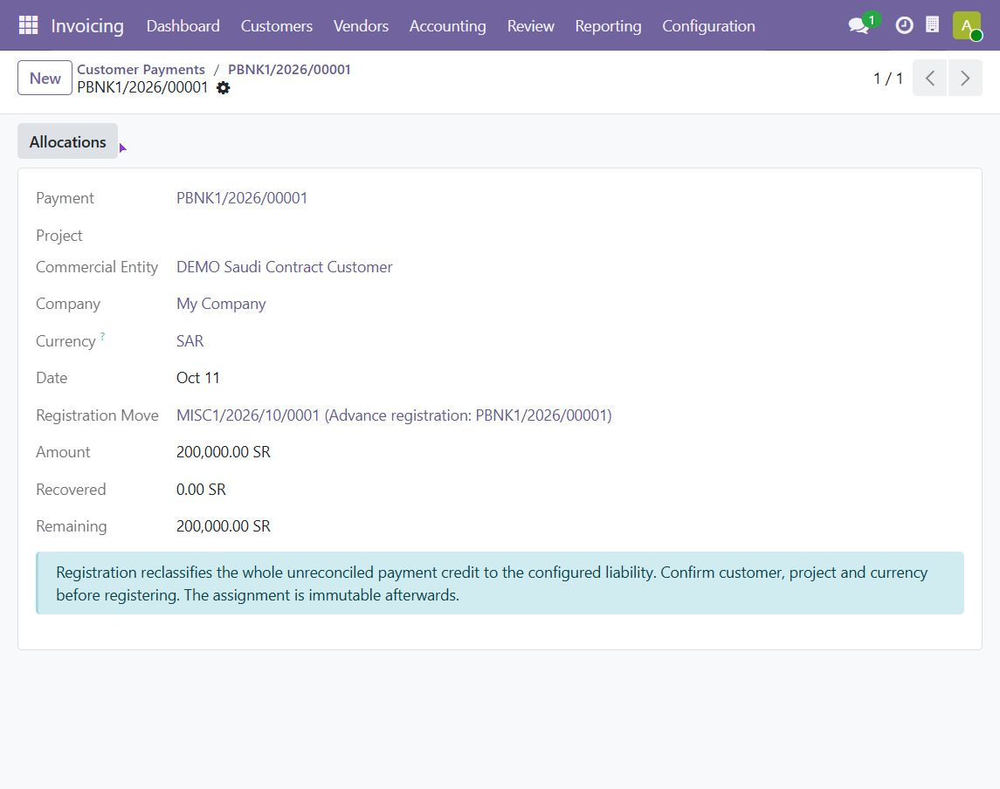
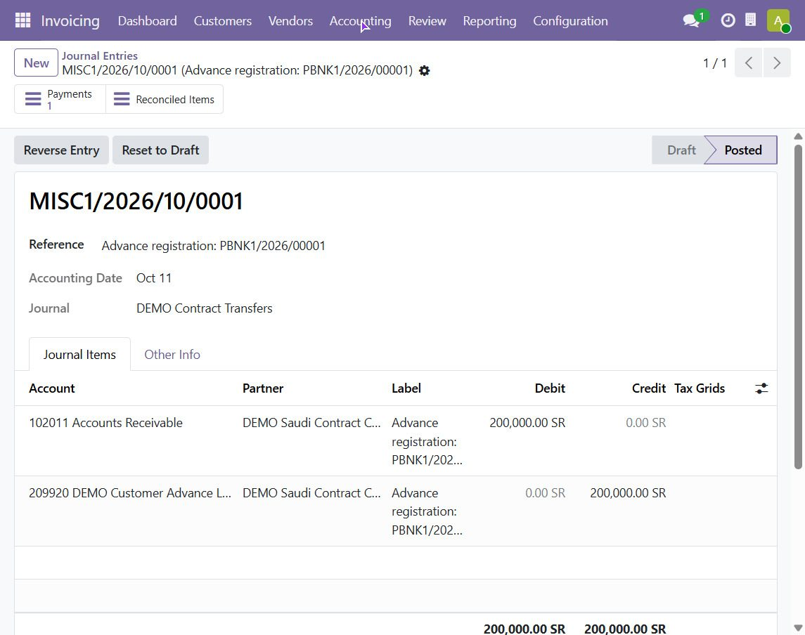
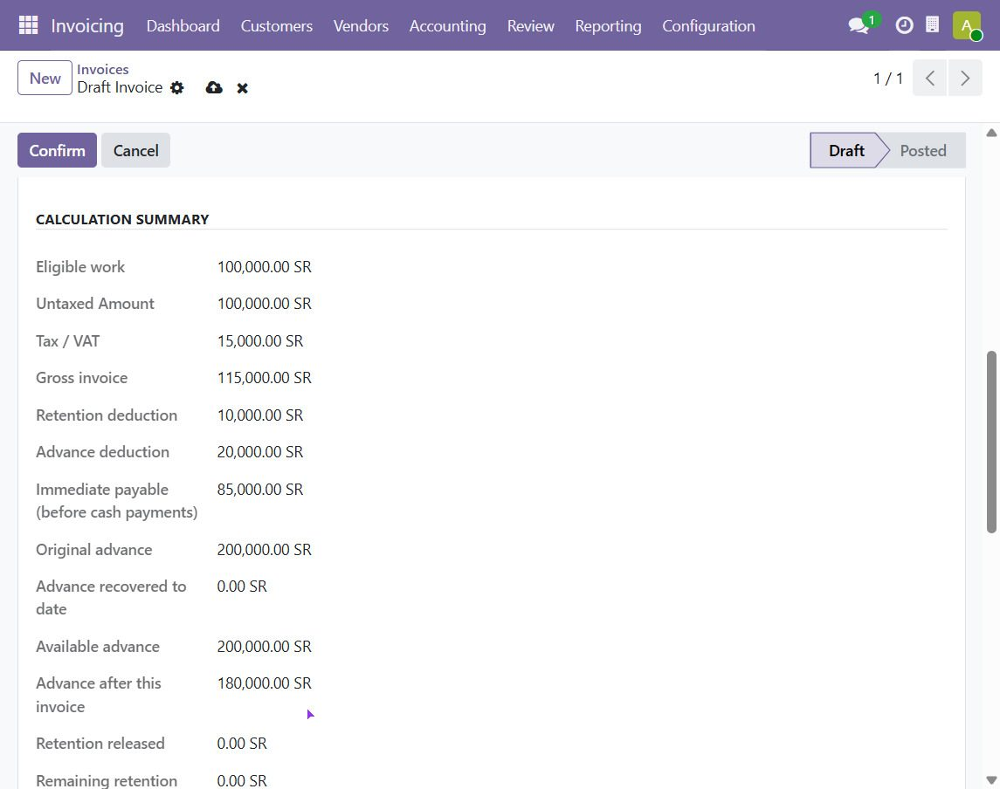
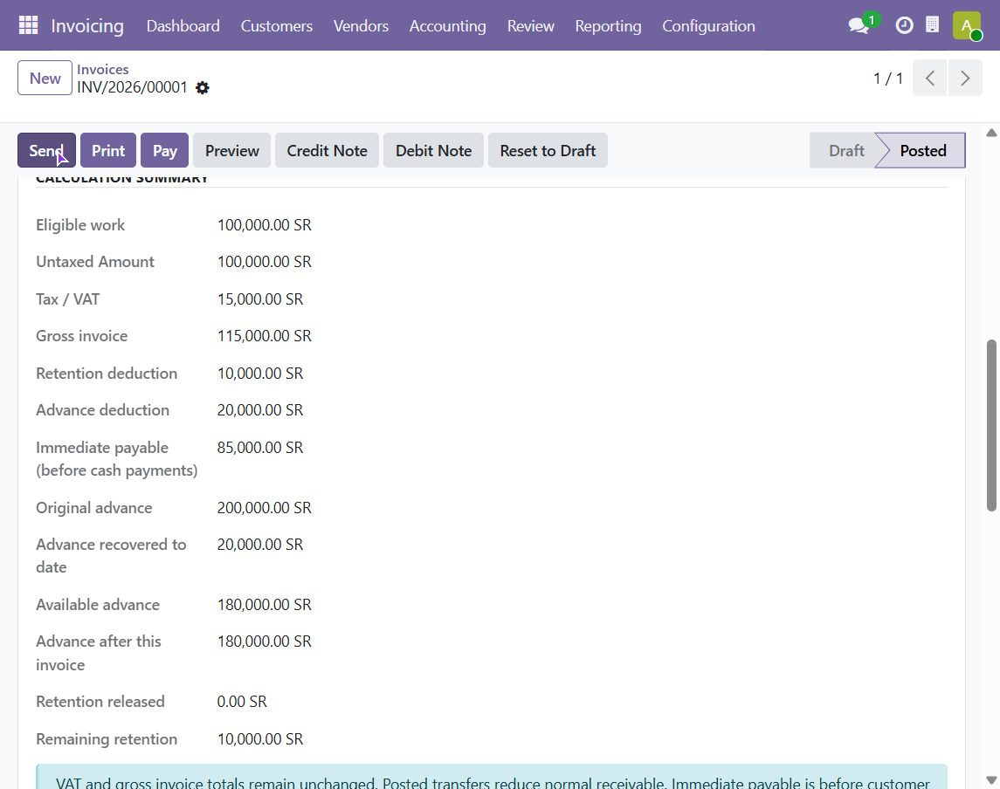
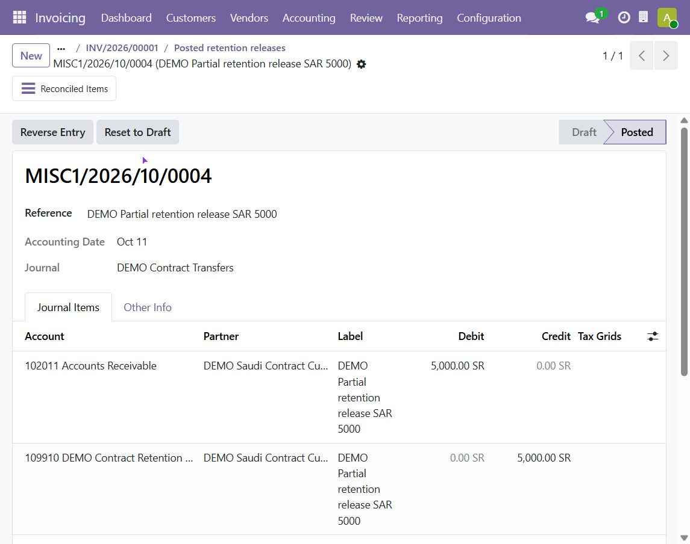

Invoice the full value of the work. The app holds back the retention, recovers the customer's advance, and tells you exactly what the customer owes today — with every step posted as a normal, auditable journal entry.
Example: SAR 100,000 of work + 15% VAT = SAR 115,000 gross invoice, with 10% retention and 20% advance recovery.
| Customer pays now 85,000 | Advance 20,000 | Held 10,000 |
| 85,000Immediate payable. Collected through the normal Pay button. | 20,000Taken from the SAR 200,000 advance the customer already paid. 180,000 remains. | 10,000Retention asset. Released later, in full or in parts, when you decide. |
Contracting and project businesses rarely invoice and collect in one clean step. The customer pays money up front, the contract keeps a percentage until handover, and every progress invoice has to reflect both. Doing this by hand in standard Odoo means manual journal entries and spreadsheets. This app does it from the invoice itself.
Customer advancesReceive a standalone payment, register it as an advance liability, and recover it automatically as a percentage or fixed amount on each progress invoice. |
RetentionHold a percentage of each invoice as a retention asset. Release it manually whenever the contract allows, fully or partially. |
Clean receivablesGross invoice and VAT never change. Deductions are posted as separate transfers and reconciled, so the customer's open balance always shows what is really collectible. |
One reportSee gross invoiced, VAT, retention held, released and remaining, plus advance received, recovered and remaining. Export it to Excel. |
Both features are independent. Use retention only, advance recovery only, or both together as in the example above.
Ten steps from setup to report. Steps 1–4 are done once per customer or advance; steps 5–7 repeat for every progress period.
Accounting → Configuration → Settings → Contract Retention and Advances
Enable the feature and set your default retention and recovery percentages (the example uses 10% and 20%). Then map three things: a reconcilable retention account (Current Assets), a reconcilable advance account (Current Liabilities), and a Miscellaneous transfer journal. Settings are saved per company.
Check the customer's receivable account, company and currency. Then choose how you work:
Customers → Payments → New
Record the customer's payment (example: SAR 200,000) with a supported bank incoming payment method. Confirm it and check that the journal entry is posted and the customer receivable credit is still unreconciled.
Dr Outstanding Receipts / Bank 200,000 Cr Customer Receivable 200,000
Payment → Assign Contract Advance → Register Advance Liability
Verify the customer, company, currency and project, then click Register Advance Liability. The unused payment credit is reclassified from receivable to a dedicated advance liability. No second receipt is created and no revenue is recognised.
Dr Customer Receivable 200,000 Cr Advance Liability 200,000


Customers → Invoices → New → Retention & Advance Recovery
Add the work and tax as usual. Switch on retention, enter the percentage (and the handover date if required), pick the matching advance, and choose a recovery percentage or a fixed amount. A live Calculation Summary shows the result before you post.
Work 100,000 + VAT 15,000 = Gross invoice 115,000 Retention = 100,000 x 10% = 10,000 Recovery = 100,000 x 20% = 20,000 Immediate payable = 85,000

Confirm the invoice. Odoo posts the standard entry (receivable 115,000, revenue 100,000, VAT 15,000). The app then creates two separate transfers and reconciles their receivable credits against the invoice.
Dr Retention Asset 10,000 / Cr AR 10,000 Dr Advance Liability 20,000 / Cr AR 20,000
Result before any cash: normal receivable 85,000, retention asset 10,000, advance liability left 180,000. Gross and VAT do not change.

Use the standard Pay / Register Payment button for the actual 85,000 receipt. Nothing special is needed.
Reporting → Contract Retention → Release Retention, or from the customer
Select one company / customer / project / currency batch, review the date, journal and available retention, and enter the amount. Example: release SAR 5,000 of the SAR 10,000 held. The date cannot be earlier than the source invoice, and the amount must be positive and within the remaining balance.
Dr Customer Receivable 5,000 Cr Retention Asset 5,000

The released amount is now a normal receivable. Collect it with standard customer payment tools. Do not create a new invoice for it: the original invoice's gross and residual are not increased by a release.
Reporting → Contract Retention & Advance Report
Choose the as-of date, company, customer, project (if used) and currency, then click Compute. Use the Invoices, Advances and Movements tabs to drill down, and Export Excel for a file with three sheets: Summary, Source transactions and Method.
What the report shows after the full example: one progress invoice, a partial retention release of 5,000, and 85,000 collected.
| Checkpoint | SAR |
|---|---|
| Gross invoiced / VAT | 115,000 / 15,000 |
| Retention held / released / remaining | 10,000 / 5,000 / 5,000 |
| Advance received / recovered / remaining | 200,000 / 20,000 / 180,000 |
| Payable before cash, including release | 90,000 |
Nothing is deleted. Every correction is a new posted entry that offsets the old one, so the history stays complete.
Linked credit notesOpen the original invoice and click Credit Note. Enter the full or partial work being credited and post. Retention and advance recovery are corrected in proportion. This works before or after a retention release. Total credited work can never exceed the original work. |
Reset to draft and repostIf the invoice has no customer payment, no retention release and no posted credit note, you can reset it, fix it, and confirm again. The old deductions are offset and a fresh set is posted. The example returns to retention 10,000 and advance remaining 180,000. |
Original: work 100,000 + VAT 15,000, retention 10,000, recovery 20,000 Release of 5,000 already posted Credit note gross: 115,000 Dr AR 5,000 / Cr Retention 5,000 (unreleased part only) Dr AR 20,000 / Cr Advance Liability 20,000 (advance restored) Credit AR after deductions: 90,000
Remaining retention becomes zero and the remaining advance returns to 200,000. The released 5,000 stays as a customer credit in receivables. Match it with normal receivable reconciliation; it is not matched automatically. Cash refunds are separate payment actions.